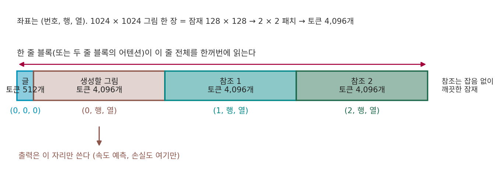

참조 이어 붙이기: 참조 잠재를 같은 토큰 줄에
IP-Adapter 는 참조 그림을 CLIP 그림 벡터 하나, 곧 토큰 4개로 줄여 건넨다. 논문도 그림 벡터 하나는 참조 그림의 정보를 일부 잃을 수 있다고 적었다. 「이 사진에서 컵 색만 바꿔 줘」 같은 편집이라면 잃어도 되는 것이 없다. 컵 말고 다른 모든 것, 탁자의 나뭇결과 창밖의 빛까지 그대로여야 한다. 그런데 디퓨전 트랜스포머는 글 토큰 줄과 그림 토큰 줄을 이어 한 줄로 읽는다. 참조 사진도 VAE 로 잠재로 줄이고 패치로 자르면 같은 꼴의 토큰 줄이 된다. 줄이지 말고 그 토큰들을 통째로 같은 줄에 이어 붙이면 어떨까?
역사: 채널로 잇기보다 줄로 잇기
2025년 6월 Black Forest Labs 는 FLUX.1 Kontext 를 내며 바로 그렇게 했다고 보고했다. 얼린 FLUX 오토인코더로 참조 그림(논문의 말로 「문맥 그림」)을 잠재 토큰으로 바꾸고, 그 토큰을 생성할 그림의 토큰 뒤에 이어 붙여 모델의 그림 쪽 줄에 넣었다. 논문은 참조 잠재를 생성할 잠재와 채널 방향으로 겹쳐 잇는 방법도 시험했지만 처음 실험에서 더 나빴다고 적었다. 줄로 이으면 참조와 생성 그림의 크기와 가로세로 비가 달라도 되고, 참조를 여러 장으로 늘리기도 쉽다. 학습은 글로 그림을 만드는 FLUX.1 체크포인트에서 출발해, 「참조 그림, 지시문, 결과 그림」 짝 수백만 개로 이어 했다.
같은 해 8월 Qwen 팀의 Qwen-Image 기술 보고서도 편집 모델을 같은 꼴로 지었다. 입력 그림을 VAE 인코더로 바꾼 잠재 토큰을 생성할 그림의 토큰과 함께 MMDiT 의 그림 쪽에 넣었다. 9월의 Qwen-Image-Edit-2509 모델 카드는 「그림을 이어 붙여 더 학습해 여러 장 편집을 할 수 있게 했다」며, 지금은 1~3장일 때 가장 잘 된다고 적었다.
출력은 생성 칸에서만
1024 × 1024 그림은 잠재 128 × 128, 2 × 2 패치로 토큰 4,096개다. 참조 한 장도 같은 크기면 4,096개다. 이 둘과 글 토큰을 한 줄로 이어 블록에 넣는다.

블록 안에서는 모든 토큰이 서로를 읽는다. 생성할 그림의 토큰은 참조 토큰에서 필요한 칸을 골라 읽고, 참조 토큰도 층마다 바뀐다. 마지막 층을 지나면 ComfyUI 코드는 출력에서 앞쪽 생성 그림 토큰 수만큼만 잘라 속도로 쓴다(comfy/ldm/flux/model.py 의 out[:, :img_tokens]). 참조 토큰의 출력은 버린다. 학습도 같다. Kontext 논문의 손실을 이 책의 시간 방향(t = 0 데이터, t = 1 잡음)으로 적으면 이렇다. 논문도 이 방향으로 적었다.
참조 zref에는 잡음이 섞이지 않는다. 논문은 참조가 없는 짝(글로만 그림을 만드는 짝)에서는 참조 토큰을 아예 빼고 학습해, 글로 그림을 만드는 능력도 지켰다고 적었다. 이렇게 참조 그림의 잠재 토큰을 생성할 그림의 토큰과 같은 줄에 이어 붙여 함께 읽히게 하는 방법을 이 책에서는 참조 이어 붙이기 (참조 잠재를 같은 줄에 / sequence concatenation)라 부른다.
위젯에서 참조를 넣는 길과 장 수, 참조 한 변을 바꾸면, 참조가 더하는 토큰과 어텐션이 견주는 쌍이 어떻게 늘어나는지 보인다. 세 길을 같은 장 수로 번갈아 골라 보자.
ML에서: 몇 장까지
FLUX.1 Kontext 논문은 식으로는 여러 장을 다룰 수 있지만 지금은 참조 한 장에 집중했다고 적었다. ComfyUI 의 ReferenceLatent 노드는 「모델이 지원하면 여러 개를 사슬로 이어 참조를 여러 장 넣을 수 있다」고 설명하며, 사슬을 이을 때마다 참조 잠재를 하나씩 덧붙인다. Qwen-Image-Edit 의 TextEncodeQwenImageEditPlus 노드는 그림 칸이 셋이고, 그림마다 넓이 1024 × 1024 에 맞춰 줄인 뒤 VAE 로 잠재를 만든다. Black Forest Labs 는 2025년 11월 FLUX.2 를 소개하며 참조 그림을 10장까지 함께 넣을 수 있다고 밝혔다. 장 수를 정하는 것은 학습 때 무엇을 보았느냐와 계산의 무게다. 한 장이 토큰 4,096개이니, 장 수가 늘면 블록을 지나는 줄이 그만큼 길어진다.
문제 7. 원본을 펴 놓고 고치기
2,000자짜리 보고서에서 낱말 하나(3자)를 바꿔 다시 써야 한다. 방법 ㉠ 은 원본 대신 원본을 80자로 줄인 요약 메모만 보고 처음부터 다시 쓴다. 방법 ㉡ 은 원본을 옆에 펴 놓고 보며 다시 쓴다. (가) ㉠ 에서 원본과 같게 남을 것이라 기대할 수 있는 것은? (나) ㉡ 에서 그대로 옮길 수 있는 글자는 몇 자인가? (다) ㉡ 의 대가는 무엇인가?

(가)는 요약에 들어간 내용, 그러니까 큰 줄거리 정도요. 문장은 거의 다 달라질 거고요.

(나)는 바꿀 3자 말고 1,997자.

그럼 (다)는요? 공짜는 아닐 텐데요.

책상에 원본을 통째로 펴 놓을 자리가 있어야 하고, 쓰는 동안 계속 원본을 오가며 봐야 해요. 요약 메모는 한눈에 들어오지만 원본은 2,000자를 다 훑어야 하니까요.

그래요. 토큰 4개짜리 참조가 요약 메모, 토큰 4,096개를 이어 붙인 참조가 펴 놓은 원본이에요. 그 대가가 실제로 얼마인지는 다음 문제에서 셈해 보죠.

코드 고칠 때 원본 파일을 열어 두고 고치는 거랑, 기억만으로 처음부터 다시 짜는 거 차이네요.
문제 8. 줄이 길어지는 값
1024 × 1024 그림을 만드는 FLUX.1 Kontext 꼴 모델(잠재 1/8, 패치 2)에 글 토큰이 512개다. (가) 참조 한 장을 512 × 512 로 줄여 이어 붙이면 블록을 지나는 토큰은 몇 개이고, 셀프 어텐션 쌍은 참조가 없을 때의 몇 배인가? (나) 같은 참조를 1024 × 1024 그대로, 채널 방향으로 겹쳐 이으면 토큰 수와 토큰 하나에 든 수는 어떻게 되는가? (다) 채널로 잇는 방법이 「크기가 다른 참조」나 「여러 장」에 불편한 까닭은?
위젯 1 에서 「참조 잠재 이어 붙이기」를 고르고 참조 한 변을 바꾸면 풀이와 견주어 볼 수 있다.
(가)는 512 ÷ 16 = 32라서 참조가 32 × 32 = 1,024토큰이고, 줄은 4,096 + 512 + 1,024 = 5,632개요. 쌍은 5,632² = 31,719,424, 참조 없을 때 4,608² 의 1.49배요.
한 변을 절반으로 줄이니까 참조 토큰이 4분의 1이 됐네.

(나)는 채널로 겹치면 토큰은 4,608개 그대로고, 토큰 하나가 64개에서 128개가 돼요. 쌍이 안 느니까 이쪽이 훨씬 낫지 않아요?
겹친다는 건 생성 그림의 (행, 열) 칸마다 참조의 어느 칸을 붙인다는 거죠?

같은 (행, 열) 칸이요. 아, 그럼 칸끼리 짝이 맞아야 하니까, ControlNet 처럼 참조와 생성 그림의 칸 수가 같아야 해요. 512 × 512 참조는 1024 × 1024 그림에 겹칠 수가 없고요.
(다)는 그거야. 크기가 다르면 늘리거나 잘라 맞춰야 하고, 여러 장이면 채널이 장 수만큼 늘어 입력 층부터 다시 지어야 해. 그리고 칸끼리 겹쳐 놓으면 참조의 왼쪽 위는 생성 그림의 왼쪽 위와만 붙어, 「참조 속 강아지를 다른 자리에」가 어려워지고.
논문이 채널로 잇기를 시험하고도 줄로 잇기를 고른 사정이 이것과 맞물려요. 다만 논문이 적은 건 「처음 실험에서 더 나빴다」까지예요.

발표 자료를 슬라이드 한 장에 겹쳐 붙이면 장 수는 안 늘지만, 크기 다른 그림은 겹칠 수가 없는 거랑 같네요.
문제 9. 참조 토큰의 시간
ComfyUI 코드에서 FLUX.1 Kontext 의 기본 길은 참조 토큰에도 지금 걸음의 시간 t 로 만든 변조(정규화 뒤의 배율·치우침·문)를 그대로 쓴다. Qwen-Image-Edit-2511 의 길(
index_timestep_zero)은 참조 토큰에만 t = 0 으로 만든 변조를 따로 쓴다. (가) t = 0.8 인 걸음에서 두 길은 참조 토큰에 대해 무엇을 「말해 주는」가? (나) 손실을 참조 토큰 자리에서도 재면, 그 자리의 정답 속도 ε − z 는 무엇이 되는가? (다) 분류기 없는 가이던스로 걸음마다 두 번 부르면, 참조 한 장(1024 × 1024)과 글 512토큰일 때 셀프 어텐션 쌍은 참조 없이 한 번 부를 때의 몇 배인가?
(가) 앞의 길은 참조 토큰에게도 「너는 잡음이 80% 섞인 토큰이야」라고 알려 주는 셈이네요. 실제로는 깨끗한데요.
뒤의 길은 「너는 잡음 없는 깨끗한 토큰이야」라고 사실대로 알려 주는 거고. 블록이 같은 가중치로 두 종류의 토큰을 다루니까, 어느 쪽이 깨끗한 원본인지를 변조로도 알려 주는 거네.
그럼 앞의 길은 틀린 걸까요?
틀렸다기보다, 학습 때 그렇게 배웠으면 그걸로 맞는 거예요. 참조가 깨끗하다는 건 토큰 값 자체에서도 보이니까요. 어느 길이 나은지는 모델이 무엇으로 학습했느냐에 달렸어요.
(나)는 참조에도 잡음을 섞은 게 없으니까… 정답 속도가 0인가요?
정답 속도는 ε − z 였죠. 참조 자리에 ε 이 있나요?
섞은 잡음이 없으니 맞힐 ε 도 없어요. 정답 자체가 정의되지 않으니까 그 자리 출력은 버리는 거네요. (다)는 줄이 8,704개라 한 번에 75,759,616쌍, 두 번이면 151,519,232쌍, 참조 없이 한 번(21,233,664쌍)의 7.14배요.
그래요. FLUX.1 Kontext [dev] 은 가이던스를 입력으로 받도록 증류해서 걸음마다 한 번만 불러요. 참조가 줄을 늘리는 값을 두 번 치르지 않으려는 쪽이기도 해요.
시험지 옆에 정답지를 같이 나눠 주고 「이건 채점 안 함」이라고 적어 두는 거네요. 채점할 답이 원래 없으니까요.